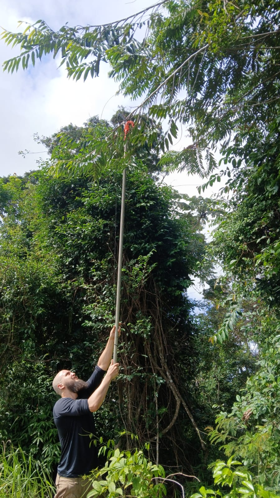

Responsável técnico
Uma consultoria construída a partir do campo.
A Ibiracaru nasce da integração entre experiência prática de campo, ecologia vegetal e rigor técnico aplicado à consultoria ambiental e florestal. A atuação envolve inventários, levantamentos florísticos, fitossociologia, restauração ecológica, monitoramento e diagnósticos ambientais.
Gabriel Carvalho
Engenheiro Florestal | CREA ES-060626/D
Mestre em Ecologia Florestal pela UFES
Atuação em Mata Atlântica, restingas, florestas estacionais semideciduais, ambientes ripários e áreas rurais.

Contato
Precisa de suporte técnico ambiental?
Envie sua demanda, localização da área e objetivo do serviço. A avaliação inicial permite indicar o melhor caminho técnico antes de transformar uma demanda ambiental em burocracia desnecessária.